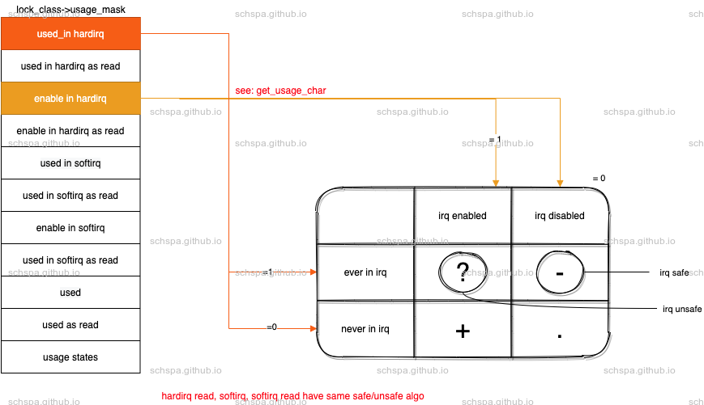
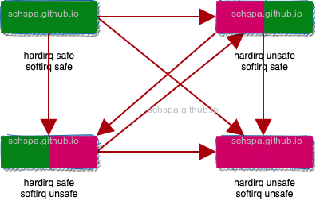
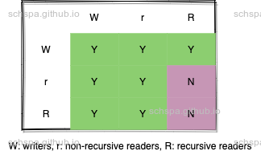
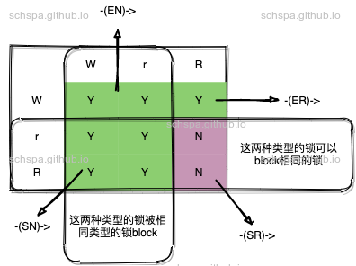

Linux lockdep
Table of Contents
简介
lockdep用来分析内核中的持锁顺序，使用情况等问题，本文简单的分析一下其实现的基本原理以及使用方法.
内核文档可参考 https://docs.kernel.org/locking/lockdep-design.html
可以检测到的问题
问题汇总
BUG: Invalid wait context
这个用来反馈内核中持锁上下文的问题，可以检测到如下类型的问题, 详情可以参考提交 https://lwn.net/Articles/579849/
raw_spin_lock(&foo);spin_lock(&bar);spin_unlock(&bar);raw_spin_unlock(&foo);
下面是一段实际发现问题的log
[ 15.090335][ T1][ 15.090359][ T1] =============================[ 15.090365][ T1] [ BUG: Invalid wait context ][ 15.090373][ T1] 5.10.59-rt52-00983-g186a6841c682-dirty #3 Not tainted[ 15.090386][ T1] -----------------------------[ 15.090392][ T1] swapper/0/1 is trying to lock:[ 15.090402][ T1] 70ff00018507c188 (&gc->bgpio_lock){....}-{3:3}, at: _raw_spin_lock_irqsave+0x1c/0x28[ 15.090470][ T1] other info that might help us debug this:[ 15.090477][ T1] context-{5:5}[ 15.090485][ T1] 3 locks held by swapper/0/1:[ 15.090497][ T1] #0: c2ff0001816de1a0 (&dev->mutex){....}-{4:4}, at: __device_driver_lock+0x98/0x104[ 15.090553][ T1] #1: ffff90001485b4b8 (irq_domain_mutex){+.+.}-{4:4}, at: irq_domain_associate+0xbc/0x6d4[ 15.090606][ T1] #2: 4bff000185d7a8e0 (lock_class){....}-{2:2}, at: _raw_spin_lock_irqsave+0x1c/0x28[ 15.090654][ T1] stack backtrace:[ 15.090661][ T1] CPU: 4 PID: 1 Comm: swapper/0 Not tainted 5.10.59-rt52-00983-g186a6841c682-dirty #3[ 15.090682][ T1] Hardware name: Horizon Robotics Journey 5 DVB (DT)[ 15.090692][ T1] Call trace:[ 15.090698][ T1] dump_backtrace+0x0/0x708[ 15.090717][ T1] show_stack+0x24/0x30[ 15.090733][ T1] dump_stack+0x1b4/0x2bc[ 15.090752][ T1] __lock_acquire+0x2800/0xb760[ 15.090774][ T1] lock_acquire+0x248/0x85c[ 15.090793][ T1] __raw_spin_lock_irqsave+0xd4/0x270[ 15.090811][ T1] _raw_spin_lock_irqsave+0x1c/0x28[ 15.090828][ T1] dwapb_irq_ack+0xb4/0x300[ 15.090846][ T1] __irq_do_set_handler+0x494/0xb2c[ 15.090864][ T1] __irq_set_handler+0x74/0x114[ 15.090881][ T1] irq_set_chip_and_handler_name+0x44/0x58[ 15.090900][ T1] gpiochip_irq_map+0x210/0x644[ 15.090917][ T1] irq_domain_associate+0x168/0x6d4[ 15.090935][ T1] irq_create_mapping_affinity+0x15c/0x354[ 15.090955][ T1] gpiochip_to_irq+0xb4/0x390[ 15.090970][ T1] gpiod_to_irq+0xf8/0x1e4[ 15.090987][ T1] gpio_keys_probe+0x9a0/0x24d0[ 15.091008][ T1] platform_drv_probe+0x138/0x214[ 15.091026][ T1] really_probe+0x2e0/0x15d4[ 15.091045][ T1] driver_probe_device+0x100/0x418[ 15.091064][ T1] device_driver_attach+0x138/0x234[ 15.091084][ T1] __driver_attach+0x184/0x358[ 15.091103][ T1] bus_for_each_dev+0x100/0x1e0[ 15.091122][ T1] driver_attach+0x5c/0x98[ 15.091141][ T1] bus_add_driver+0x33c/0x9d8[ 15.091159][ T1] driver_register+0x1e4/0x6b0[ 15.091179][ T1] __platform_driver_register+0x118/0x214[ 15.091196][ T1] gpio_keys_init+0x28/0x34[ 15.091218][ T1] do_one_initcall+0x8c/0x2d8[ 15.091236][ T1] do_initcall_level+0x144/0x230[ 15.091257][ T1] do_initcalls+0xb0/0x170[ 15.091275][ T1] do_basic_setup+0xd0/0xe4[ 15.091293][ T1] kernel_init_freeable+0x180/0x3e4[ 15.091311][ T1] kernel_init+0x2c/0x398[ 15.091330][ T1] ret_from_fork+0x10/0x30
WARNING: bad contention detected!
这个错误表示lockdep内部逻辑出错，一般不应该报出来
WARNING: possible circular locking dependency detected
见下面的分析，通过依赖路径分析来检测
ABBA, ABBCCA 死锁
WARNING: possible recursive locking detected
AA死锁，重入
这个通过遍历已获取到的锁列表，判断当前的锁是否已经被获取到.读锁除外.
WARNING: bad unlock balance detected
lock和unlock不成对调用
- unlock时进行检测发现当前锁没有被持有时报错.
- 初始化时检测是否持有锁，持有则报错.
WARNING: suspicious RCU usage
在rcu代码中通过RCU_LOCKDEP_WARN宏来报出来的warning
WARNING: lock held when returning to user space!
在离开内核空间时，依旧持有内核空间中的锁, 通过在离开内核空间之前过滤进程已持有锁的列表来判断.
kernel source for call lockdep_sys_exit();
WARNING: %s/%d still has locks held!
WARNING: held lock freed!
通过debug_check_no_locks_freed报错，内核中在很多锁，对象初始化的地方加入该检查，通过检查free/初始化的区域中包含已经持有的锁来判断.
kernel source for lock freed check in mm/slub.c
WARNING: Nested lock was not taken
检测持有nest锁时，是否已经持有锁
WARNING: possible irq lock inversion dependency detected
检测由于irq重入而造成可能的死锁
https://bugzilla.redhat.com/show_bug.cgi?id=1304242
[ 108.223030] CPU0 CPU1[ 108.223030] ---- ----[ 108.223030] lock(&(&list->lock)->rlock#2);[ 108.223030] local_irq_disable();[ 108.223030] lock(policy_rwlock);[ 108.223030] lock(&(&list->lock)->rlock#2);[ 108.223030] <Interrupt>[ 108.223030] lock(policy_rwlock);
WARNING: inconsistent lock state
锁状态不匹配，i.e. 同一把锁在hardirq, softirq, 进程上下文中使用到，但是_bh, _irq的后缀使用错误，导致系统有死锁
如下面的patch，以及修复bug
[ 313.402947] CPU0[ 313.402948] ----[ 313.402949] lock(&(&wsm.lock)->rlock);[ 313.402951] <Interrupt>[ 313.402952] lock(&(&wsm.lock)->rlock);[ 313.402954]*** DEADLOCK ***
https://lore.kernel.org/all/20190517231626.85614-1-dennis@kernel.org/
WARNING: chain_key collision
WARNING: %s-safe -> %s-unsafe lock order detected
锁上下文安全性检查
WARNING: HARDIRQ-safe -> HARDIRQ-unsafe lock order detected
https://www.mail-archive.com/linux-kernel@vger.kernel.org/msg2299913.html
实现原理
将锁抽象成lock class，并且在其中记录各种事件
通过定义static的 lock_class_key来记录每个key
#ifdef CONFIG_DEBUG_SPINLOCKextern void __raw_spin_lock_init(raw_spinlock_t *lock, const char *name,struct lock_class_key *key, short inner);# define raw_spin_lock_init(lock) \do { \static struct lock_class_key __key; \\__raw_spin_lock_init((lock), #lock, &__key, LD_WAIT_SPIN); \} while (0)#else在锁初始化时，将具体的key和class联系在一起 （默认情况下代码中同一个初始化位址具有相同的class）
- 部分的同类型锁对象在代码的不同的位址初始化，可以自定义key class来设置同样的class.
lockdep_set_class* API可以用来实现这个功能
kernel source irq_desc.lock keyclass - 在相同代码位址初始化的key class也可以具备不同的subclass
kernel source for tty_struct->termios_rwsem
https://github.com/torvalds/linux/commit/d2b6f44779d3be22d32a5697bd30b59367fd2b33
不同的subclass也会被lockdep当作是不同的锁，subclass可以支持动态进行添加，而keyclass只能是编译的时候就确定好。无法动态根据示例化对性的个数做扩展 - 通过以上的方法，lockdep将内核中的锁按照class的类别进行检测
lockdep认为同class的锁在逻辑上是同一种锁，具有相同的处理方法. 每个class可能包含很多个不同的锁对象，lockdep通过记录这些锁使用时进出的上下文信息，以及进出进程已经持有的锁的上下文信息进行比较来发现问题
锁状态
在内核中，各种锁共用9类状态
=== ==================================================='.' acquired while irqs disabled and not in irq context'-' acquired in irq context'+' acquired with irqs enabled'?' acquired in irq context with irqs enabled.=== ===================================================The bits are illustrated with an example::\----> hardirq| \---> hardirq readlock|| \--> softirq||| \-> softirq readlock||||(&sio_locks[i].lock){-.-.}, at: [<c02867fd>] mutex_lock+0x21/0x24||||||| \-> softirq disabled and not in softirq context|| \--> acquired in softirq context| \---> hardirq disabled and not in hardirq context\----> acquired in hardirq context
上面的文档已经解决的很清楚了
从内核的使用中，由于不同上下文间具有固定的抢占规则，可以锁添加上softirq/hardirq-safe/unsafe的标签
根据上面的9种状态，lockdep通过记录锁在获取时的上下文，以及中断开启状态，来机率锁的状态，每把锁可以在不同safe/unsafe的标签中转化

softirq/hardirq的safe状态可以用来判断持锁是否会有风险，入下图所示，红色箭头所表示的锁依赖顺序是有死锁风险的

在当前的task struct中记录相关的加锁信息
在记录时通过lock_class来进行，所以即使没有发生死锁，系统也可以上报具体的错误信息
RSLS Call Trace
下面是raw spinlock持锁时的lockdep相关的操作逻辑
- __raw_spin_lock_irqsave
- spin_acquire
- if !try_lock success
- lock_contended
- lock
- lock_acquired
Mutex lock
下面是mutex_lock持锁时的lockdep相关的操作逻辑
- __mutex_lock
- __mutex_lock_common
- mutex_acquire_nest
- if try_lock success
- lock_acquired
- return
- else
- lock_contended
- wait until lock acquired
- lock_acquired
从上面的两个例子可以看出，对于不同的锁，lockdep处理逻辑都是类似的，主要用到3个api函数 lock_acquire, lock_contended, lock_acquired.
在进行锁操作时，对比之前已经持有的锁信息，通过规则判断出具体的异常
上下文判断
这个很简单，通过判断每个锁所处于的上下文来进行判断
下面是linux对于上下文类型的定义, 代码提交如下 https://lwn.net/Articles/579849/
lockdep_wait_type
enum lockdep_wait_type {LD_WAIT_INV = 0, /* not checked, catch all */LD_WAIT_FREE, /* wait free, rcu etc.. */LD_WAIT_SPIN, /* spin loops, raw_spinlock_t etc.. */#ifdef CONFIG_PROVE_RAW_LOCK_NESTINGLD_WAIT_CONFIG, /* preemptible in PREEMPT_RT, spinlock_t etc.. */#elseLD_WAIT_CONFIG = LD_WAIT_SPIN,#endifLD_WAIT_SLEEP, /* sleeping locks, mutex_t etc.. */LD_WAIT_MAX, /* must be last */};
系统在运行时会检查所有已经获取到的锁，并且以此为依据检查持锁的上下文是否正确,代码可以参考 check_wait_context
- wait_type_outer
可以持有此锁的上下文类型, wait_type >= wait_type_outer既可认为是正确的持持锁顺序
LD_WAIT_SLEEP 表示可以在进程上下文中持有该锁
LD_WAIT_SPIN 表示可以在进程上下文，以及原子上下文中持有该锁
LD_WAIT_INV 表示outer和inner保持一致 (大部份锁都是这样的设置) wait_type_inner
持有该锁之后进入的上下文类型
eg:
Mutex lock的wait_type_inner为LD_WAIT_SLEEP, 表示持有该锁之后系统可以睡眠。
raw_spinlock的wait_type_inner为LD_WAIT_SPIN, 表示持有该锁之后系统就会进入不可抢占的原子上下文
#ifdef CONFIG_DEBUG_LOCK_ALLOC# define __DEP_MAP_MUTEX_INITIALIZER(lockname) \, .dep_map = { \.name = #lockname, \.wait_type_inner = LD_WAIT_SLEEP, \}#else# define __DEP_MAP_MUTEX_INITIALIZER(lockname)#endif
系统根据着个类型，就可以跟踪，记录目前系统所持有的锁的上下文状态，并且于即将持有的锁inner waittype做比较，检测出相应的问题
锁依赖
此部份是lockdep设计的核心，死锁检测的方法，以及定理将从此处给出
- lock type
因为不同性质的锁阻塞的条件不同，所以内核根据阻塞产生条件，给内核中的锁分为了以下的几大类.lockdep将锁分为以下几种类型
- writers
- exclusive lockers, like spin_lock() or write_lock()
此种锁是内核编程中最常用的类型，完全独占的锁，同一时间只会有一个owner，最容易分析 - non-recursive readers
- shared lockers, like down_read()
此种锁是普通的读锁，因为读锁可以同时被读端锁持有，因此允许多线程同时持有，有相互依赖的持有关系也不一定会死锁 - recursive readers
recursive shared lockers, like rcu_read_lock()
这种锁是更不易死锁的类型，由于支持重入，具有更佳宽松个的死锁条件
并且为了方便文章编写，做出缩写如下
abbr type W/E exclusive lockers r non-recursive readers R recursive readers S all readers (non-recursive + recursive), as both are shared lockers. N writers and non-recursive readers, as both are not recursive.
- non-recursive readers的死锁情形
为了方便理解，通过下面的例子，可以看出重入属性对死锁的产生的影响
这个例子展示了non-recursive readers被writer的waiter阻塞导致出现deadlock的情形
虽然read_lock可以同时被多个cpu/单个cpu持有，但是如果有线程在等待write锁, 系统依旧会因此而阻塞
TASK A: TASK B:
read_lock(X);
write_lock(X);
read_lock_2(X);
简而言之就是锁X在第二次获取读锁时，会因为另一个task在等待获取写锁而导致死
锁。这是因为写锁会block之后尝试获取读锁的操作，如果没有这个block操作，系统
可能会因为一致有进程不断获取读锁，而导致，写入的进程无法拿到锁，造成饿死.
具体可以参考 read_lock will wait for write waiter
void queued_read_lock_slowpath(struct qrwlock *lock){/** Readers come here when they cannot get the lock without waiting*/if (unlikely(in_interrupt())) {/** Readers in interrupt context will get the lock immediately* if the writer is just waiting (not holding the lock yet),* so spin with ACQUIRE semantics until the lock is available* without waiting in the queue.*/atomic_cond_read_acquire(&lock->cnts, !(VAL & _QW_LOCKED));return;}atomic_sub(_QR_BIAS, &lock->cnts);/** Put the reader into the wait queue*/arch_spin_lock(&lock->wait_lock);atomic_add(_QR_BIAS, &lock->cnts);/** The ACQUIRE semantics of the following spinning code ensure* that accesses can't leak upwards out of our subsequent critical* section in the case that the lock is currently held for write.*/atomic_cond_read_acquire(&lock->cnts, !(VAL & _QW_LOCKED));/** Signal the next one in queue to become queue head*/arch_spin_unlock(&lock->wait_lock);}EXPORT_SYMBOL(queued_read_lock_slowpath);如上面的内核实现，读锁会block在arch_spin_lock(&lock->wait_lock);或者 atomic_cond_read_acquire(&lock->cnts, !(VAL & _QW_LOCKED));，在此处等待写锁离开临界区，单此时，读写被Task A拿到，导致死锁.
- 根据锁类型，来观察死锁的条件关系
针对这三种锁类型，可以有如下几种的阻塞关系矩阵. Y表示行标会阻塞列标, N表示不会产生阻塞的问题

上面列出了不同类型的锁在相互依赖时是否会产生block，N表示完全不会形成阻塞等待
下面简单列举两个不会产生阻塞的路径
- R won't block r. 递归的读锁不会阻塞非递归的读锁
- R won't block R. 递归的读锁不会相互block
- R won't block r. 递归的读锁不会阻塞非递归的读锁
- 依赖分析
通过上面的表格，在检测死锁时，共需要检测9种情况
考虑如下的依赖情况
L1 -> L2
我们需要关心在获取L1的情况下，再去获取L2系统会不会被block. 换句话说就是有没有可能存在L3，L3依赖于L1，而L2依赖于L3.
这样我们只需要检测一下获取L1之前获取过的锁列表, 以及获取L2之后获取过的锁列表，再综合锁的类型进行考虑就可以检测出来死锁。
综合上面的阻塞关系图，具有如下规律

根据这个规律，可以方便的将关系简化为4种，这样，就可以大大降低复杂度.
lockdep会动态生成一张依赖图，系统将对应的lockclass添加到这张图中，通过对应的算法照出相应的依赖关系.
依赖类型
针对不同的锁类型，可以抽象出以下四中依赖关系, 按照上面的阻塞关系图。
- -(ER)->
exclusive writer to recursive reader dependency - -(EN)->
exclusive writer to non-recursive locker dependency - -(SR)->
shared reader to recursive reader dependency - -(SN)->
shared reader to non-recursive locker dependency
- -(ER)->
- strong path定义
根据阻塞图，如果一条依赖路径上全部都是可阻塞的类型，则定义为strong path
简单来说就是不经过-(R)-> -(S)->路径的定义为strong path. 因为经过这种路径的都有非block的锁关系，lockdep认为不会造成死锁.
下面是内核文档中对strong path定义的原文
A "path" is a series of conjunct dependency edges in the graph. And we define a
"strong" path, which indicates the strong dependency throughout each dependency
in the path, as the path that doesn't have two conjunct edges (dependencies) as
-(xR)-> and -(Sx)->. In other words, a "strong" path is a path from a lock
walking to another through the lock dependencies, and if X -> Y -> Z is in the
path (where X, Y, Z are locks), and the walk from X to Y is through a -(SR)-> or
-(ER)-> dependency, the walk from Y to Z must not be through a -(SN)-> or
-(SR)-> dependency.
- 死锁关系证明
- 定理1
如果一条路径上有闭环的strong path，那么这个就会构成死锁. 定理2
如果一条路径上没有闭环的strong path，那么一定不会构成死锁.
在这两个定理的前提下，可以很容易得出，闭环的strong path是死锁的充分必要条件. 上面两条定理的证明在内核文档中有详细的描述。在此不再赘述.
所以在lockdep的检测中，只需要找出持锁路径上是否有闭环的strong path就可以了.
- 定理1
- 代码实现
source to call check_noncircular
通过代码注释可以看到，内核通过广度优先的遍历方式，寻找是否会形成依赖环路, 在找到对应的环路之后，再经过对闭环strong path的判断来验证是否存在死锁.
检测是否存在闭环的strong path
/** We are about to add B -> A into the dependency graph, and in __bfs() a* strong dependency path A -> .. -> B is found: hlock_class equals* entry->class.** We will have a deadlock case (conflict) if A -> .. -> B -> A is a strong* dependency cycle, that means:** Either** a) B -> A is -(E*)->** or** b) A -> .. -> B is -(*N)-> (i.e. A -> .. -(*N)-> B)** as then we don't have -(*R)-> -(S*)-> in the cycle.*/static inline bool hlock_conflict(struct lock_list *entry, void *data){struct held_lock *hlock = (struct held_lock *)data;return hlock_class(hlock) == entry->class && /* Found A -> .. -> B */(hlock->read == 0 || /* B -> A is -(E*)-> */!entry->only_xr); /* A -> .. -> B is -(*N)-> */}如上面的注释，判断几个东西
- hlock_class(hlock) == entry->class
- A -> B 这个锁和即将获取的锁形成了依赖关系
以前有依赖关系 A -> B, 再尝试通过B -> A的顺序拿锁是会造成这个条件成立 - hlock->read == 0
- B -(E*)-> A 这个情况满足闭环strong path的条件
- !entry->only_xr
- A -> .. -> B is -(*N)-> (i.e. A -> .. -(*N)-> B)
如果这几个条件成立，则认为满足了闭环strong path的充要条件.
Debug
/proc/lockdep 节点可以查看每个lock class的详细debug信息, 下面列出了示例信息
代码请参考 source for /proc/lockdep
00000000d17fd3f7 OPS: 137 FD: 308 BD: 9 ++++: &tty->termios_rwsem-> [00000000b06224ce] &lock->wait_lock-> [00000000d4898666] &tty->write_wait-> [000000007b4e289b] &ldata->output_lock-> [000000006ca1fe00] (console_sem).lock-> [00000000ee9c07cf] console_lock-> [000000002bdc3481] &port->mutex-> [00000000bc14037e] &rq->lock-> [000000004119195b] &tty->read_wait-> [000000004246edf4] &port_lock_key-> [00000000b287322b] &mm->mmap_lock-> [0000000007fc188b] &tty->throttle_mutex-> [000000003fde6c48] &p->pi_lock
- 00000000d17fd3f7
- lock的地址，%p显示，这里由于打印的保护机制，被显示为指针的hash值
- OPS
- 137 尝试获取锁的次数, __lock_acquire时加1
- FD
- 308 在获取该锁之前获取过的锁的个数
- BD
- 9 在获取该锁之后获取过的锁个数
++- 锁的状态，见上文中的解释
- &tty->termios_rwsem
- 锁的名字